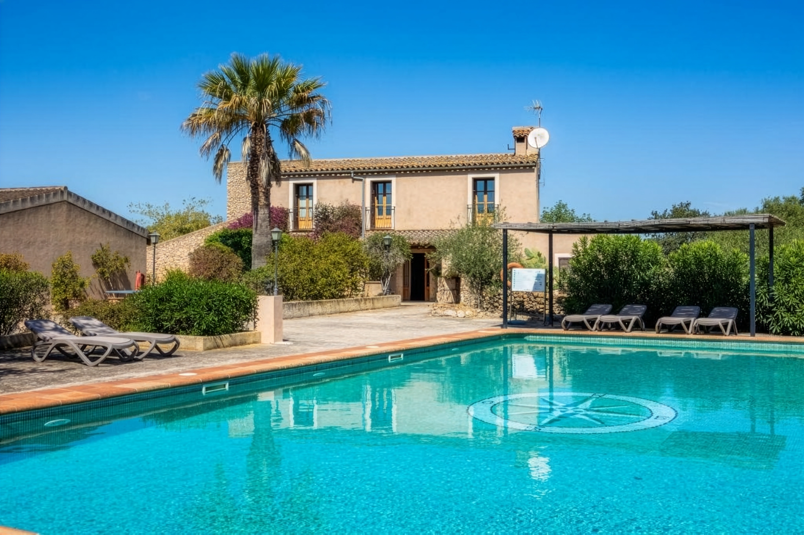

Casa Completa
Los 650 m² de Can Patró solo para los suyos: 8 dormitorios, 8 baños, piscina, jardín y cocina completa. Ideal para celebraciones, familias numerosas o grupos de amigos.
Ver disponibilidad
La finca
En las afueras de Manacor, Can Patró abre sus puertas a quienes buscan paz sin renunciar a la belleza. La villa, de 650 m², se alquila por habitaciones individuales, mini-apartamentos o en exclusiva: usted elige si viaja en pareja, con amigos o con toda la familia.
El día empieza con luz de campo, el canto de los pájaros y el agua de la piscina. Por la tarde, una barbacoa bajo el cielo mallorquín. Por la noche, dos chimeneas encendidas y el silencio de la isla.
A 13 km de las Cuevas del Drach y a 54 km del aeropuerto de Palma. Lo bastante cerca para explorar; lo bastante lejos para desconectar.
Alojamientos
Flexibilidad total para cada viaje: una habitación para una escapada íntima, un mini-apartamento con independencia propia, o la villa entera para reunir a todo el grupo.
Los 650 m² de Can Patró solo para los suyos: 8 dormitorios, 8 baños, piscina, jardín y cocina completa. Ideal para celebraciones, familias numerosas o grupos de amigos.
Ver disponibilidadReserve solo su habitación, con baño privado y acceso a las zonas comunes de la finca. La opción perfecta para viajeros en pareja o estancias breves.
Ver disponibilidadEspacios independientes con cocina propia, pensados para quienes buscan autonomía sin perder el encanto y la calma de la finca.
Ver disponibilidadComodidades
Can Patró está pensada para que el día fluya, dentro y fuera de la casa.
Galería
Un vistazo a la casa, el jardín y la luz de Manacor.
Ubicación
Can Patró está en Manacor, en el corazón agrícola de Mallorca, a poca distancia de cuevas, playas y el aeropuerto.
Descubre Mallorca
Ideas para llenar los días entre la piscina y la carretera de almendros.
12 marzo 2026
Cuándo y dónde ver los campos de Manacor vestidos de blanco y rosa, y las rutas tranquilas para recorrerlos en bicicleta.
Leer más28 marzo 2026
Qué esperar de la visita, el mejor horario para evitar aglomeraciones y cómo combinarla con una tarde en Porto Cristo.
Leer más9 abril 2026
Un recorrido sin prisa por los mercados semanales y las calles de piedra del este de Mallorca, con Can Patró como base.
Leer másReservas
El calendario de Can Patró se gestiona con un sistema externo de disponibilidad. Elija habitación, mini-apartamento o casa completa y solicite las fechas que tiene en mente.
Contacto
Cuéntenos cuántas personas viajan, qué tipo de alojamiento prefiere y las fechas aproximadas. Respondemos con claridad y sin prisas.
Atención al cliente info@canpatro.com
Reservas y gestión reservas@canpatro.com
Ubicación Manacor, Mallorca · 13 km Cuevas del Drach · 54 km aeropuerto
Preguntas frecuentes
Si tiene otra duda, escríbanos a info@canpatro.com y le responderemos con gusto.
El check-in es a partir de las 16:00 y el check-out hasta las 11:00. Si su vuelo lo permite, contáctenos: siempre que la disponibilidad lo permita, intentamos adaptar los horarios a su llegada o salida.
Sí, las mascotas son bienvenidas en la mayoría de las reservas de casa completa, previa consulta. En alquileres de habitación individual o mini-departamento, escríbanos antes de reservar para confirmar disponibilidad.
Las condiciones de cancelación dependen de la tarifa elegida en el motor de reservas y se muestran antes de confirmar el pago. Para reservas gestionadas por correo, indicamos las condiciones exactas al enviar el presupuesto.
Sí. Todos los huéspedes, reserven una habitación, un mini-departamento o la villa completa, tienen acceso a la piscina, el jardín y la zona de barbacoa de Can Patró.